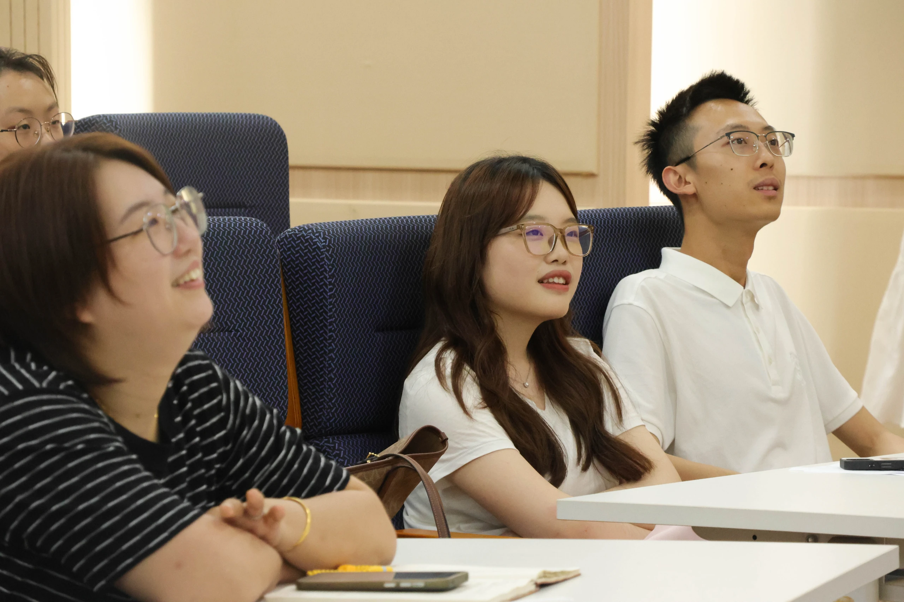

博医云 · 五期 · 初版预览
博医之窗
认识博医，认识五期。

2026年6月15日 · 博医五期第一次班会
从博医出发
荣昶—博医卓越医学生培养计划的背景与介绍，见现有计划介绍页面。当前网站服务博医五期，为初版预览。
了解五期
组织分组
- 行政分组
- 行政1—5组
- 职能分组
- 实践组 / 宣传组 / 组织组 / 学习组
岗位与任期信息待补。
博医云 · 五期 · 初版预览
认识博医，认识五期。

2026年6月15日 · 博医五期第一次班会
荣昶—博医卓越医学生培养计划的背景与介绍，见现有计划介绍页面。当前网站服务博医五期，为初版预览。
岗位与任期信息待补。